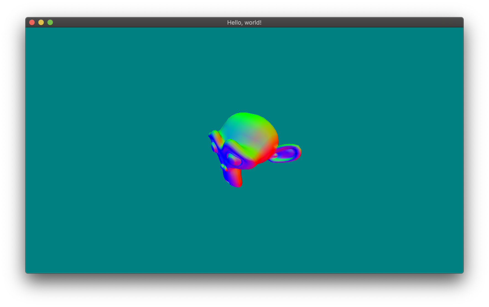

Adding light
Light requires normals to be able to compute the shading on surfaces. You might be used to it now: if we need vertex normals, we need to change our vertex type definition.
Rethinking our vertex type
We need normals, so let’s just state it in our vertex type and semantics!
#![allow(unused)] fn main() { #[derive(Clone, Copy, Debug, Eq, Hash, PartialEq, Semantics)] pub enum VertexSemantics { #[sem(name = "position", repr = "[f32; 3]", wrapper = "VertexPosition")] Position, #[sem(name = "normal", repr = "[f32; 3]", wrapper = "VertexNormal")] Normal, } #[derive(Clone, Copy, Debug, Vertex)] #[vertex(sem = "VertexSemantics")] struct Vertex { position: VertexPosition, normal: VertexNormal, } }
If you try to compile now, you will get an error such as the following:
error[E0063]: missing field `normal` in initializer of `Vertex`
--> src/main.rs:102:26
|
102 | let vertex = Vertex { position };
| ^^^^^^ missing `normal`
Ah, the beauty of strong-typing. :) Let’s fix our loader!
Adapting the loading code
Let’s take normals into account when loading objects:
#![allow(unused)] fn main() { for shape in geometry.shapes { if let obj::Primitive::Triangle(a, b, c) = shape.primitive { for key in &[a, b, c] { if let Some(vertex_index) = vertex_cache.get(key) { indices.push(*vertex_index); } else { let p = object.vertices[key.0]; let n = object.normals[key.2.ok_or("missing normal for a vertex".to_owned())?]; let position = VertexPosition::new([p.x as f32, p.y as f32, p.z as f32]); let normal = VertexNormal::new([n.x as f32, n.y as f32, n.z as f32]); let vertex = Vertex { position, normal }; let vertex_index = vertices.len() as VertexIndex; vertex_cache.insert(*key, vertex_index); vertices.push(vertex); indices.push(vertex_index); } } } else { return Err("unsupported non-triangle shape".to_owned()); } } }
The main change is this line:
#![allow(unused)] fn main() { let n = object.normals[key.2.ok_or("missing normal for a vertex".to_owned())?]; }
Basically, the obj format doesn’t force to use normals, so the normal index is optional. In our case, we can enforce it this way or we could have a fallback normal that would point in the same direction for all vertices. Up to you to decide.
Debugging normals
Let’s make a small and fun debug session to ensure our normals are okay. Modify the vertex and fragment shader stages to forward the normals and display them.
// vertex shader
in vec3 position;
in vec3 normal;
out vec3 v_normal;
uniform mat4 projection;
uniform mat4 view;
void main() {
v_normal = normal;
gl_Position = projection * view * vec4(position, 1.);
}
// fragment shader
in vec3 v_normal;
// we will output a single color
out vec3 frag_color;
void main() {
// KISS
frag_color = v_normal;
}
Recompile and run. You should have something similar to this:

How fancy! We can see several interesting things here:
- The top of the skull of Suzanne is mostly green. It makes sense because in those positions, the
vertex normals are roughly
(0, 1, 0), which when translated to RGB colors is mostly green. - The front face is mostly blue, which makes sense too as the normals there are around
(0, 0, 1), which is blue in RGB encoding. - The left side (from Suzanne point of view) is mostly red, which makes sense too as it’s
(1, 0, 0)when encoded as RGB. - You can see that normals here are smoothly interpolated — i.e. you don’t actually see the triangles
that compose it. This is due to the fact the normals here were generated so that their directions
generate smooth interpolation across triangles. We could have used flat normals (i.e. face
normals) instead, or we could also explicitly tell the GPU not to perform interpolation in the
shaders. You can try it by using
flat out vec3 v_normal;in the vertex shader andflat in vec3 v_normal;in the fragment shader.
Face normals here:

Actually lighting the mesh!
Lighting is now a simple shader concept. Let’s implement a simple lighting effect based on directional lighting. Basically, we can shade an object by computing the sine of the angles between the light rays and the object normal. This is called diffused lighting and is an approximation that already gives good results.
The following code is based on the Phong illumination model. It’s basic and we know how to do way better in terms of realism, but for our case, it’s more than enough.
in vec3 v_normal;
// we will output a single color
out vec3 frag_color;
void main() {
// object color
vec3 obj_color = vec3(.6, .6, .6);
// light direction
vec3 light_dir = vec3(0., -1., -.5);
// diffusion factor (hence the k)
float kd = dot(v_normal, -light_dir);
frag_color = obj_color * kd;
}
And here’s the result:

Complete code:
use cgmath::{perspective, EuclideanSpace, Matrix4, Point3, Rad, Vector3}; use glfw::{Action, Context as _, Key, WindowEvent}; use luminance_derive::{Semantics, UniformInterface, Vertex}; use luminance_front::context::GraphicsContext; use luminance_front::pipeline::PipelineState; use luminance_front::render_state::RenderState; use luminance_front::shader::Uniform; use luminance_front::tess::{Interleaved, Mode, Tess, TessError}; use luminance_front::Backend; use luminance_glfw::GlfwSurface; use luminance_windowing::{WindowDim, WindowOpt}; use std::collections::HashMap; use std::env; use std::fs::File; use std::io::Read as _; use std::path::Path; use std::process::exit; use std::time::Instant; use try_guard::verify; use wavefront_obj::obj; const VS_STR: &str = include_str!("vs.glsl"); const FS_STR: &str = include_str!("fs.glsl"); const FOVY: Rad<f32> = Rad(std::f32::consts::FRAC_PI_2); const Z_NEAR: f32 = 0.1; const Z_FAR: f32 = 10.; #[derive(Debug, UniformInterface)] struct ShaderInterface { #[uniform(unbound)] projection: Uniform<[[f32; 4]; 4]>, #[uniform(unbound)] view: Uniform<[[f32; 4]; 4]>, } #[derive(Clone, Copy, Debug, Eq, Hash, PartialEq, Semantics)] pub enum VertexSemantics { #[sem(name = "position", repr = "[f32; 3]", wrapper = "VertexPosition")] Position, #[sem(name = "normal", repr = "[f32; 3]", wrapper = "VertexNormal")] Normal, } #[derive(Clone, Copy, Debug, Vertex)] #[vertex(sem = "VertexSemantics")] struct Vertex { position: VertexPosition, normal: VertexNormal, } type VertexIndex = u32; struct Obj { vertices: Vec<Vertex>, indices: Vec<VertexIndex>, } impl Obj { fn to_tess<C>( self, surface: &mut C, ) -> Result<Tess<Vertex, VertexIndex, (), Interleaved>, TessError> where C: GraphicsContext<Backend = Backend>, { surface .new_tess() .set_mode(Mode::Triangle) .set_vertices(self.vertices) .set_indices(self.indices) .build() } fn load<P>(path: P) -> Result<Self, String> where P: AsRef<Path>, { let file_content = { let mut file = File::open(path).map_err(|e| format!("cannot open file: {}", e))?; let mut content = String::new(); file.read_to_string(&mut content).unwrap(); content }; let obj_set = obj::parse(file_content).map_err(|e| format!("cannot parse: {:?}", e))?; let objects = obj_set.objects; verify!(objects.len() == 1).ok_or("expecting a single object".to_owned())?; let object = objects.into_iter().next().unwrap(); verify!(object.geometry.len() == 1).ok_or("expecting a single geometry".to_owned())?; let geometry = object.geometry.into_iter().next().unwrap(); println!("loading {}", object.name); println!("{} vertices", object.vertices.len()); println!("{} shapes", geometry.shapes.len()); // build up vertices; for this to work, we remove duplicated vertices by putting them in a // map associating the vertex with its ID let mut vertex_cache: HashMap<obj::VTNIndex, VertexIndex> = HashMap::new(); let mut vertices: Vec<Vertex> = Vec::new(); let mut indices: Vec<VertexIndex> = Vec::new(); for shape in geometry.shapes { if let obj::Primitive::Triangle(a, b, c) = shape.primitive { for key in &[a, b, c] { if let Some(vertex_index) = vertex_cache.get(key) { indices.push(*vertex_index); } else { let p = object.vertices[key.0]; let n = object.normals[key.2.ok_or("missing normal for a vertex".to_owned())?]; let position = VertexPosition::new([p.x as f32, p.y as f32, p.z as f32]); let normal = VertexNormal::new([n.x as f32, n.y as f32, n.z as f32]); let vertex = Vertex { position, normal }; let vertex_index = vertices.len() as VertexIndex; vertex_cache.insert(*key, vertex_index); vertices.push(vertex); indices.push(vertex_index); } } } else { return Err("unsupported non-triangle shape".to_owned()); } } Ok(Obj { vertices, indices }) } } fn main() { let dim = WindowDim::Windowed { width: 960, height: 540, }; let surface = GlfwSurface::new_gl33("Hello, world!", WindowOpt::default().set_dim(dim)); match surface { Ok(surface) => { eprintln!("graphics surface created"); main_loop(surface); } Err(e) => { eprintln!("cannot create graphics surface:\n{}", e); exit(1); } } } fn main_loop(mut surface: GlfwSurface) { let path = env::args() .skip(1) .next() .expect("first argument must be the path of the .obj file to view"); println!("loading {}", path); let mesh = Obj::load(path).unwrap().to_tess(&mut surface).unwrap(); let start_t = Instant::now(); let mut program = surface .new_shader_program::<VertexSemantics, (), ShaderInterface>() .from_strings(VS_STR, None, None, FS_STR) .unwrap() .ignore_warnings(); let back_buffer = surface.back_buffer().unwrap(); let [width, height] = back_buffer.size(); let projection = perspective(FOVY, width as f32 / height as f32, Z_NEAR, Z_FAR); let view = Matrix4::<f32>::look_at(Point3::new(2., 2., 2.), Point3::origin(), Vector3::unit_y()); 'app: loop { // handle events surface.window.glfw.poll_events(); for (_, event) in surface.events_rx.try_iter() { match event { WindowEvent::Close | WindowEvent::Key(Key::Escape, _, Action::Release, _) => break 'app, _ => (), } } // rendering code goes here // get the current time and create a color based on the time let t = start_t.elapsed().as_millis() as f32 * 1e-3; let color = [t.cos(), t.sin(), 0.5, 1.]; let back_buffer = surface.back_buffer().unwrap(); let render = surface.new_pipeline_gate().pipeline( &back_buffer, &PipelineState::default().set_clear_color(color), |_, mut shd_gate| { shd_gate.shade(&mut program, |mut iface, uni, mut rdr_gate| { iface.set(&uni.projection, projection.into()); iface.set(&uni.view, view.into()); rdr_gate.render(&RenderState::default(), |mut tess_gate| { tess_gate.render(&mesh) }) }) }, ).assume(); // swap buffer chains if render.is_ok() { surface.window.swap_buffers(); } else { break 'app; } } }